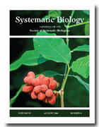
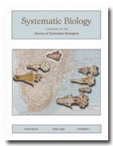
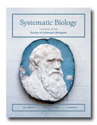

Society of Systematic Biologists
Home of Systematic Biology
Popular contentSyndicateCategories
User loginNavigationWho's onlineThere are currently 0 users and 3 guests online.
|
August 2006 issue out
 Evolutionary Lazarus Taxa and Massive HomoplasyA paper of potential interest to those concerned with the "phylogenetic valence" of morphological characters is: Zander, R. H. 2006. The Pottiaceae s.str. as an evolutionary Lazarus taxon. J. Hattori Bot. Lab. 100: 581--602. Reprint: http://www.mobot.org/plantscience/ResBot/Repr/Lazarus.pdf This paper provides an example and a theoretic justification for rejecting phylogenetic splitting of groups for which resultant massive morphological homoplasy would then contravene Dollo's Rule against re-evolution of complex traits. Bayesian Phylogenetics Symposium at YaleNew Applications of Bayesian Inference in Phylogenetic Biology We would like to invite all interested parties to attend the forthcoming ââ?¬Ë?Bayesian Invasionââ?¬â?¢ symposium. The event features presentations by leading experts in Bayesian phylogenetic research that highlight exciting new developments in Bayesian phylogeny estimation and phylogeny-based inference methods. Speakers/subjects include: Michael Donoghue (Yale University) Joseph Chang (Yale University) NESCent call for proposalsNESCent Postdoctoral Fellows, Sabbatical Scholars, Working Groups and Catalysis Groups The National Evolutionary Synthesis Center (NESCent) is now accepting proposals for Postdoctoral Fellows, Sabbatical Scholars, Working Groups and Catalysis Groups. The deadline is December 1, 2006. For more information, please see our website at http://www.nescent.org/proposals/. Countering the Wedge"Countering the Wedge: A multi-pronged, multi-year strategy to oppose creationism and intelligent design in the science curriculum of public schools" is a document authored by Massimo Pigliucci, David Baum, and Mark McPeek for the joint council of the Society for the Study of Evolution, the Society of Systematic Biologists, and the American Society of Naturalists. Project Manager:Consortium for the Barcode of Life
April 2006 data online Paper wins Mitchell PrizeUCLA have announced that Dr. Marc Suchard and his former graduate student, Dr. Benjamin Redelings, have won the 2006 Mitchell Prize for their June 2005 article in Systematic Biology, entitled "Joint Bayesian Estimation of Alignment and Phylogeny" (doi:10.1080/10635150590947041). Call for Proposals ââ?¬" NESCent Working Groups and Catalysis GroupsThe National Evolutionary Synthesis Center (NESCent) is now accepting proposals for Working Groups and Catalysis Groups. The deadline is June 15, 2006. For more information, please see our website. February 2006 data online
 |
Latest issue
EVOLDIRphylobabble.orgiPhyloPhyloseminarSystematics AssociationNESCentThe Genealogical World of Phylogenetic NetworksCiteULike PhylogenyEvolutionary Bioinformatics
CladisticsBMC Evolutionary Biology
Molecular Biology and Evolution |
 Follow us on Twitter
Follow us on Twitter Find us on Facebook
Find us on Facebook